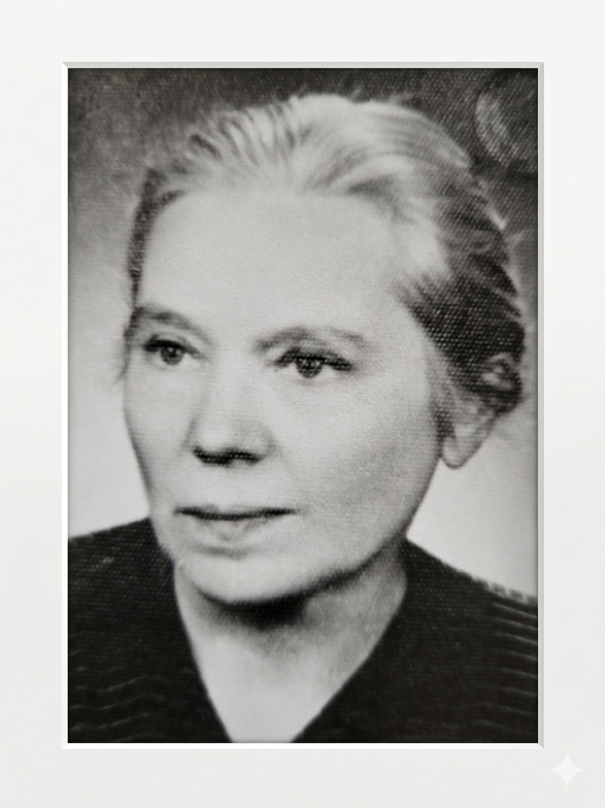
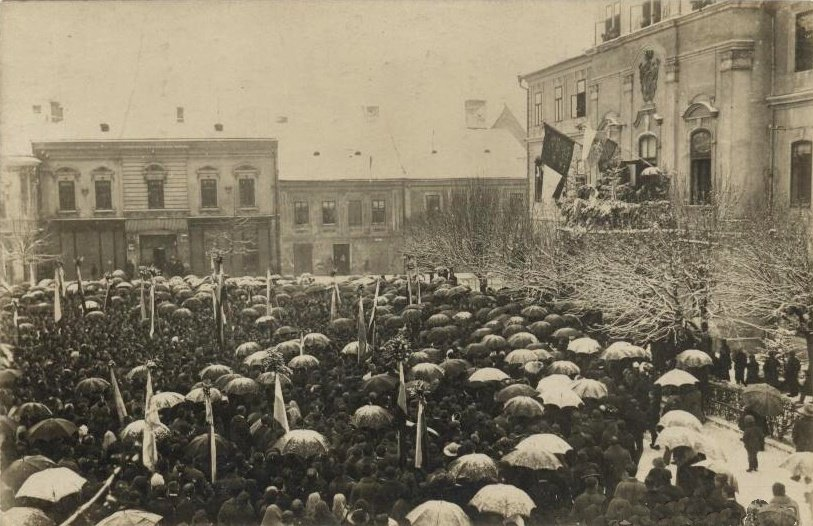

Story
Anna Šenšelová
1882, Očová – 1976, Martin
Family photograph
01 / 03
Story
1882, Očová – 1976, Martin
Family photograph

Anna Šenšelová
1882 – 1976
Anna Šenšelová (1882–1976) was an exceptional, deeply modest, and tenacious woman whose life became inseparable from the history of Slovak embroidery. She was born on Christmas Eve in Očová, into a family of Slovak patriots, and from childhood she was accompanied by a love of Slovak culture.
Although her original dream was botany and gardening, fate brought her to Martin in 1910. It was there that the legendary Lipa — a cooperative society for folk industry — was being founded, and Anna was called to become its driving force.
To understand her work as thoroughly as possible, at the age of 28 she returned to the classroom in Prague, mastering a wide range of embroidery techniques at the Municipal Industrial School. On her return, she devoted herself entirely to preserving traditions:
Anna collected old embroidery samples and used them to ensure that traditional patterns were preserved. She watched closely to make sure the women were not swept along by the fashion trends arriving in new magazines. The embroidery sample book she had stitched in Dačov Lom she later sold to the Slovak National Museum in Martin.
Under Anna's leadership, Lipa won awards at international exhibitions from Vienna to Košice. At various points she served as shop manager, administrator, secretary, and bookkeeper — and she remained with Lipa until its dissolution in 1951.
Family memories · Oľga Kapustová
Oľga Kapustová, another of Anna's great-nieces, remembers her as a quiet, modest, and hardworking woman — "tetinka", as the children in the family called her. She loved spending time in her garden, and when the raspberries ripened she would send the children out with bowls to eat their fill. Sometimes she gave them money to buy ice cream from the shop — just to make them happy. She lived simply and frugally, setting money aside for old age. But the currency reform of the 1950s wiped out her savings, and Anna lost the flat she had been living in. Her sister Oľga and her family took her in, and it was there that Anna spent the final years of her life.
The last three years of Anna's life were marked by suffering. After a fall in which she broke her hip, she was confined to bed. Her physical health, and above all her mental health, began to slowly deteriorate. The nights brought restlessness, heavy dreams, moments of delirium. Yet she was not alone — her closest family cared for her with love and devotion until the very end. Anna Šenšelová died on 28 July 1976.
The legacy of my great-aunt, Anna Šenšelová, almost fell into oblivion. Two plastic bags of embroideries discovered in my grandparents' cellar led me to search for her story. And not only hers, but mine too — for through these embroideries I began tracing my entire family history, and through knowing my family's past I have come to feel a kind of love for myself and pride in how deep my roots go.
source: Proceedings of the Slovak National Museum. Ethnography, Jan V. Ormis, 1982 · family archive: Ján Juráš, Oľga Kapustová
Family line
Anna came from a long line of Evangelical Slovak patriots. Hover over a person for more information.
Great-grandparents


Parents


Anna Šenšelová and her siblings


Embroidery in the DNA
When I began researching the history of Lipa and Anna Šenšelová, I did not expect to discover a love of embroidery in so many of my ancestors. The Šenšel family had a relationship with needle and thread that I could never have imagined.
It was 1918, and Slovakia stood on the threshold of an enormous change. A group of young women from Mikuláš decided to welcome this liberation in a way that was not only symbolic but also dangerous — by embroidering a flag of freedom. They worked behind locked doors with the curtains drawn, and when anyone asked what they were doing, they replied that they were "embroidering altar cloth".
They were funded by Branko Lacko, who procured genuine Czech white silk. The design of the flag was drawn by the academic painter Kostelníček; gold and silver threads were supplied by the Lipa association from Turčiansky Sv. Martin — the very association where Anna Šenšelová worked for so many years. The motifs from Bohemia, Slovakia, Moravia, and Silesia were embroidered by Miss Uličná; each corner of the flag had its own embroiderer — four women on the corners, others on the patterns, preparation, and tracing — nine courageous women in all, one shared act.
Before beginning, each embroiderer cut a strand of her own hair and stitched it into the pattern of the flag. They literally sewed a piece of themselves into the fabric — into history.

Embroiderers of the Flag of Freedom —
Darina Trnovská (later Šenšelová) second from left, top row
Flag of Freedom

Ceremonial gathering
8 December 1918, Liptovský Sv. Mikuláš
Among those four courageous women was my own great-grandmother, Darina Trnovská, later Šenšelová — Anna Šenšelová's sister-in-law.
The flag was publicly presented on 8 December 1918 at a gathering of 15,000 people in Liptovský Sv. Mikuláš. It was consecrated together by Andrej Hlinka and Jur Janoška. Soldiers took their oath beneath it. A special poem was written for that day and recited by Lujza Lacková.
In 1968, on the fiftieth anniversary of the Martin Declaration, the flag returned home to Liptovský Mikuláš. At a ceremonial evening titled "Hoj, zem drahá!" ("Oh, dear land!"), it was presented to the public once more by three of the embroiderers — Darina Droppová-Hubková, Oľga Schatzová-Belnayová, and Darina — by then Darina Šenšelová-Trnovská.
Among the other women of the Šenšel family whose lives were connected to embroidery was Anna's mother, Ľudmila Šenšelová Izáková, who served as the link between Anna and the embroiderers in Slatina — a quiet, unassuming connection without which Lipa might never have reached the right women. Also working in the Lipa shop in Martin was Anna's niece, Viera Helvíghová, who sadly died very young. Her older sister, Darina Helvíghová, then cared for Viera's two daughters and later also looked after Anna Šenšelová herself in her old age in Martin.
The story of the flag was documented by Jozef Juráš, an Evangelical pastor and political prisoner, the father of Ján Juráš — Anna Šenšelová's godson. This text comes from the personal archive of the Juráš family and is one of the few direct accounts of how the Flag of Freedom came to be.
Read the original text by Jozef Juráš (PDF)Listen
One of the first things that inspired me to dig deeper into the story of my namesake was this podcast. Monika Kapráliková approached the topic with sensitivity and curiosity — and it was thanks to her that I understood I simply had to get to know Anna Šenšelová.
Rádio_FM · Robinsonky_FM
Anna Šenšelová
A podcast from the Robinsonky_FM series, one of the first impulses behind this search. Monika Kapráliková approached Anna's story with great sensitivity — it is well worth hearing it in her telling too.
Listen on Rádio_FM